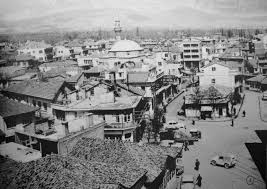
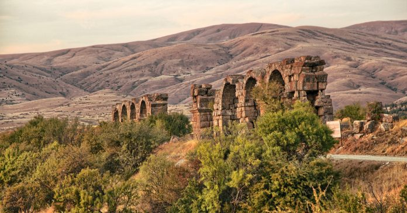
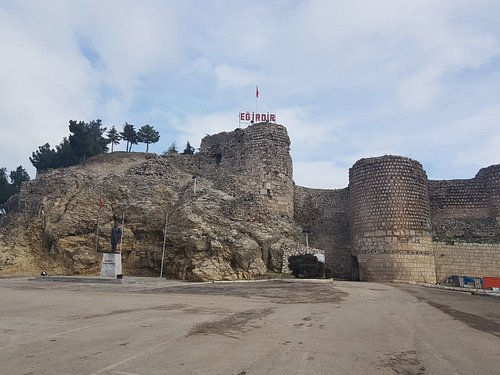
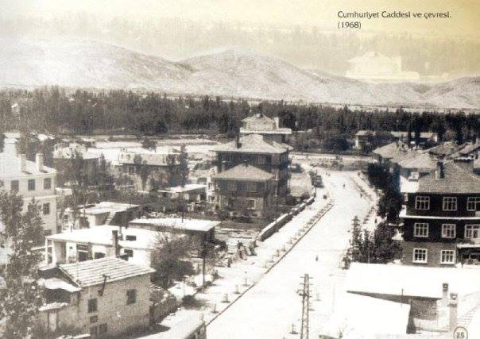

Şehir Tarihi Hakkında
   
Tarihi Gelişim
1919-1923 yılları arasında Milli Mücadele döneminde Isparta, yörede söz konusu olan yabancı işgallerinden en az etkilenen illerden biri olmuştur. İhtilaf devletlerinden olan İtalyanların nüfusuna bırakılmış olan Isparta, çok büyük bir direniş göstermiş, İtalyanların işgaline boyun eğmemişdir. İç Anadolu, Ege ve Akdeniz Bölgelerini birbirine bağlayan önemli bir coğrafi konumda bulunan Isparta, çeşitli yönlerden önemli gelişmelerini Cumhuriyet döneminde sağlamıştır. Isparta ve ilçelerinin gelişmelerini Cumhuriyet döneminde iki safhada incelemek gerekir. İlki, 1960 yılına kadardır. Bu dönemde sosyal, ekonomik ve bayındırlık yönlerinden özellik taşıyan çalışmalara başlanmıştır. Cumhuriyet Türkiye’sinde Isparta’nın ikinci gelişme safhası 1960 yılından sonra başlar. Bu tarihten bu yana gelişme sürecinin daha da arttığı, özellikle sanayileşme ve şehirleşme hareketlerinin önem kazandığı görülmektedir. Isparta, Cumhuriyet döneminde de 1960 yılına kadar olan devrede bir taraftan bellibaşlı bayındırlık hizmetlerine kavuşurken, özellikle gül tarımcılığının ve halıcılığın gelişmesi ile ekonomik yönden önemli ölçüde etkilenmiştir. 1936 yılında Isparta’nın demiryoluna kavuşmasının yöreye olumlu etkisi büyük olmuştur. 1960 yılından günümüze kadar geçen süre içinde ise, Isparta’da modern şehirleşme hızla etkisini göstermiş birçok sosyal, eğitim, sağlık, sanayi tesisleri merkez kentte olduğu kadar ildeki diğer yerleşmelerde de kurulmuş ve kurulmalarına devam edilmektedir.
Adının Kaynağı
Kente niçin Isparta denildiği, Isparta adının nereden geldiği, kesin olarak bilinmemektedir. Bu konuda pek çok araştırma, görüşler vardır. Böcüzade Süleyman Sami’nin Isparta Tarihi’nde, Meydan Larousse’da, Kaamus’ul-Alam’da Isparta adının Pisidia şehirlerinden Baris’in yerine kullanıldığı ifade edilmektedir. Baris adının Sanskritçe "Su" anlamına gelen "Vari" kelimesiyle bağlantısı olduğu sanılmaktadır. Bu adın başına "Is" zarf edatı getirilerek Isparita şeklini aldığı, galat olarak "Isparta" denildiği belirtilmektedir. Diğer bir görüşü ifade eden Turhan Hikmet Dağlıoğlu ile Prof. Unger, Isparta adının "Baride" kelimesinden geldiğini, bu kelimenin Hititçe, belkide Lidya dilinden gelmiş bir sözcük olduğunu, Yunan göçmenlerin Anadolu’ya gelmelerinden sonra Barida adına "Eis" takısını ekleyerek "Isbarida" dediklerini açıklamaktadırlar. Isparta adının "Eis Baride"den geldiği, daha sonra da bu sözün Türkler tarafından "Isparta" şeklinde kullanıldığı görüşüne, Prof. Osman Turan ve Prof. Ramsey’de katılmaktadırlar. Arap kaynaklarında Isparta adı, Sabarta (İbni Batuta’da) olarak geçmektedir. Bu adın MÖ VIII. yy.’da Karadeniz’in kuzeyindeki İskitlerce güneye sürülen Sabardai kavimlerinin yöreye yerleşmeleri sonucu verildiği de ifade edilmektedir. Bir başka görüş de Isparta’nın tarihte en çok geçen adının Baris olduğudur. Bu isim Hititler tarafından verilmiş olup, "Bereket" anlamına gelmektedir. Romalılar Pisidia bölgesine hakim olunca, Baris adını kendi dillerine uydurup "Sbarita" demişlerdir. Kent Türklerin eline geçtikten sonra da Isparta şehrine dönüşmüş ve bu isim altında anıla gelmiştir.
Coğrafi Özellikleri
Isparta İli, Akdeniz Bölgesi’nin kuzeyinde Göller bölgesinde yer alır. 8.933 km2’lik yüzölçümüne sahip olan şehrin rakımı ortalama 1050 metredir. İlin % 68,4’ü dağlar, % 16,8’i ovalar ve % 14,8’i platolardan oluşur. Isparta’da, Batı Toroslar’ın uzantısı olan ve yüksekliği 3000 metreyi bulan oldukça yüksek dağlar vardır. Dedegöl, Barla, Davraz ve Akdağ ilin en önemli dağları; Eğirdir Gölü, Beyşehir Gölü, Kovada Gölü ve Gölcük Krater Gölü ise bilinen en önemli gölleridir. Coğrafyası üzerinde çok sayıda göl, gölet, dağ, yayla, kanyon, mağara, orman, akarsu ile milli ve tabiat parkları bulunan Isparta, bu zenginlikleriyle gelen turistlere ve doğaseverlere her türlü alternatif turizm imkânlarını sunar. Isparta topraklarının güney kısmını oluşturan Sütçüler İlçesi, Eğirdir İlçesi, kısmen de Aksu İlçesi ve Merkez İlçe’de Akdeniz İklimi’nin etkileri görülür. Bu bölümlerde kışlar yağışlı ve daha ılıman geçerken, yazlar sıcak ve nemlidir. Yine aynı coğrafya Akdeniz Bölgesi’nin coğrafi özelliklerini de gösterir. Batı Toros Dağları’nın en yüksek zirvelerinden biri de Aksu ve Yenişarbademli İlçeleri sınırları içinde kalan Dedegöl Dağı’dır (2998 m). Barla Dağı (Gelincik Tepesi-2798 m) ile kış sporları ve turizm merkezi olarak ilan edilmiş Davraz Dağı (2635 m) ilin diğer yüksek dağlarıdır. Sütçüler İlçesi genelinde akarsuların ve tektonik hareketlerin sonucu büyük dağ silsileleri arasında vadi ve kanyonlar oluşmuştur. Bu kanyonların pek çoğunda küçük dereler ve akarsular Akdeniz’e doğru birbiriyle yarışmaktadır. Yine bu bölüm çeşitli ağaç türlerinin bulunduğu sık ormanlarıyla da dikkat çekmektedir. Eğirdir İlçesi sınırları içinde is Yukarı Gökdere Kasnak Meşesi Ormanı endemik türlerin bir arada bulunduğu bir alan olarak karşımıza çıkmaktadır. İlin doğusunda kalan Şarkikaraağaç, Gelendost; kuzeyindeki Yalvaç, Senirkent; batısında yer alan Uluborlu, Keçiborlu ve Gönen İlçeleri ise genel olarak Orta Anadolu’nun karakteristik bir özelliği olan bozkır iklimini yansıtırlar. Bu bölümün coğrafi özellikleri ise geniş ovalar, yaygın olmayan ormanlar, yer yer yüksek dağlar olarak belirtilebilir.